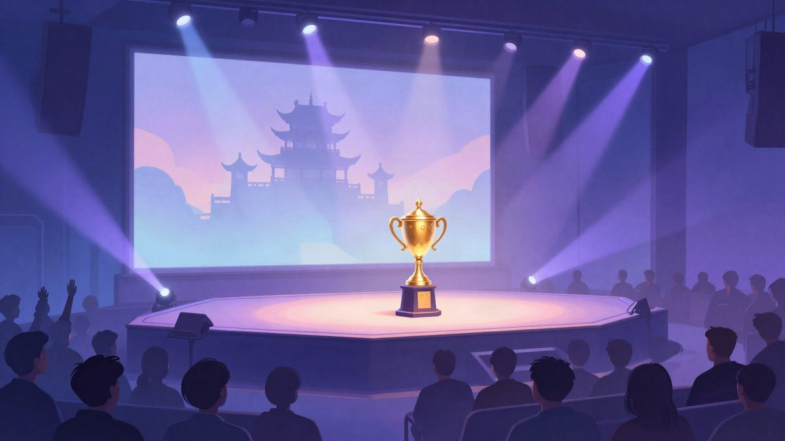

LoL Worlds 2027 prvi put u Japanu, MSI u Valenciji

Riot Games je potvrdio većinu lokacija za LoL esports 2027. Swiss Stage Worldsa prvi će put biti u Japanu, u Nagoyi, Knockout Stage u Južnoj Koreji, a Mid-Season Invitational u Valenciji. Datumi turnira još nisu poznati.
Riot Games je potvrdio većinu lokacija za LoL esports kalendar 2027. Swiss Stage Svjetskog prvenstva (Worlds) prvi će put u povijesti biti u Japanu, u Nagoyi. Mid-Season Invitational (MSI) 2027 bit će u Valenciji u Španjolskoj, što će biti prvi LoL turnir u tom gradu.
Knockout Stage Worldsa održat će se u Južnoj Koreji, u Suwonu i Seoulu. Finale je planirano u novoj Seoul Areni s 28.000 mjesta, koja bi se trebala otvoriti tek u lipnju 2027. Vlada grada Seoula za domaćinstvo finala izdvojila je milijun dolara (oko 950.000 eura). Ostale utakmice Knockout Stagea igrat će se u Suwon Convention Centeru.
Promjena u odnosu na ovu godinu
Ove je godine Riot cijeli Swiss Stage i Knockout do polufinala održao na jednoj lokaciji, u Credit Union of Texas Event Centeru u Allenu u Teksasu. Iduće godine Swiss Stage dobiva zaseban prostor u Nagoyi, gradu između Tokija i Kyota. Prvotno je bilo planirano da Worlds 2027 u cijelosti bude u Južnoj Koreji.
MSI u Europi
MSI 2027 održat će se u Feria de València. To će biti prvi međunarodni LoL turnir u Europi od finala Worlds 2024 u Londonu. Riot će u Valenciji iduće godine održati i Valorant Masters 2, vjerojatno u sličnom razdoblju.
Moguće su i dodatne promjene u kalendaru. Riot je rekao da bi Demacia Cup iduće godine želio zamijeniti Play-Ins na Worldsu. Najavio je i da će First Stand 2027 imati više timova nego bilo koji dosadašnji LoL turnir.
Izvor: Insider Gaming